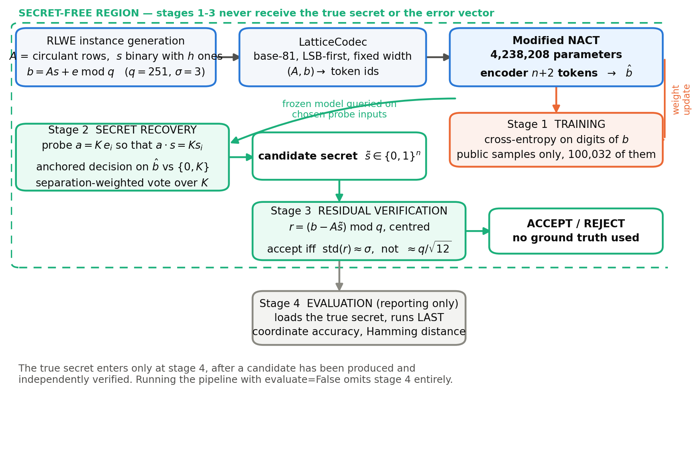
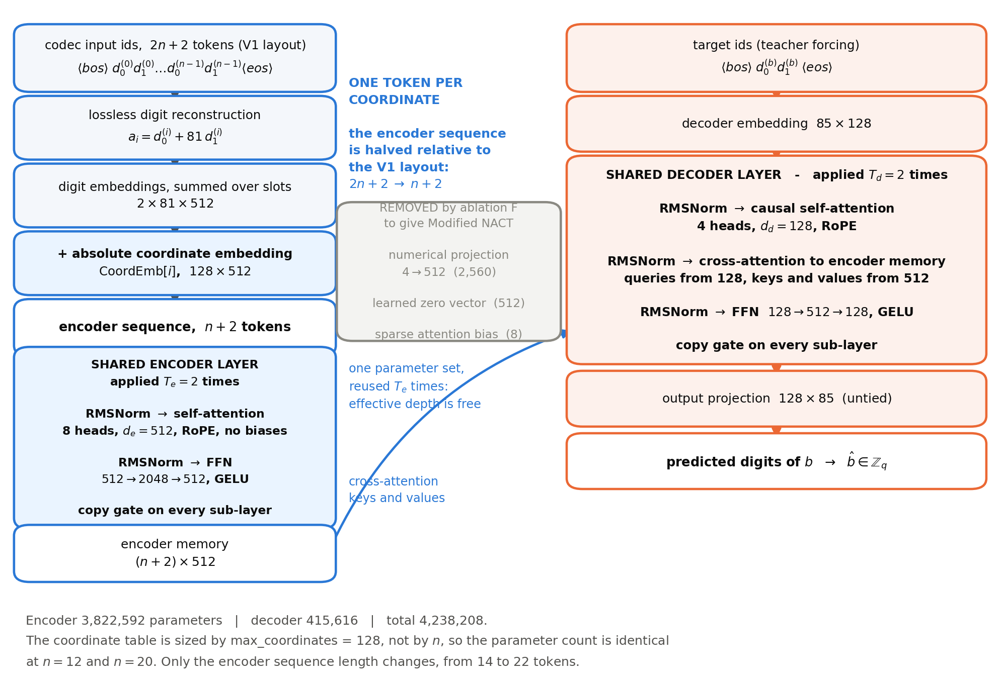
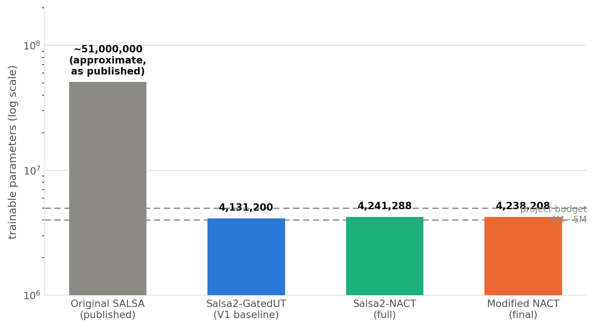
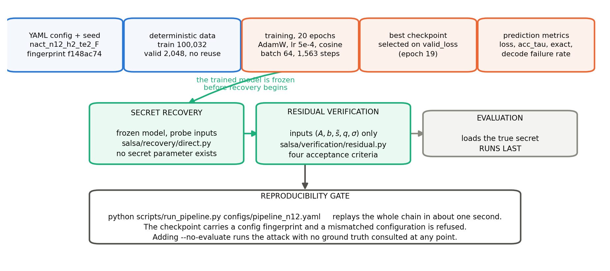
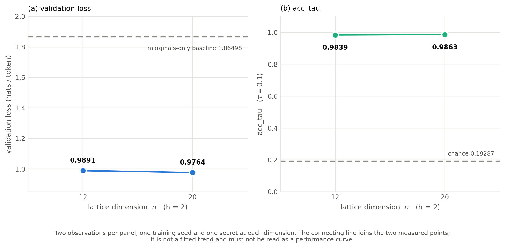
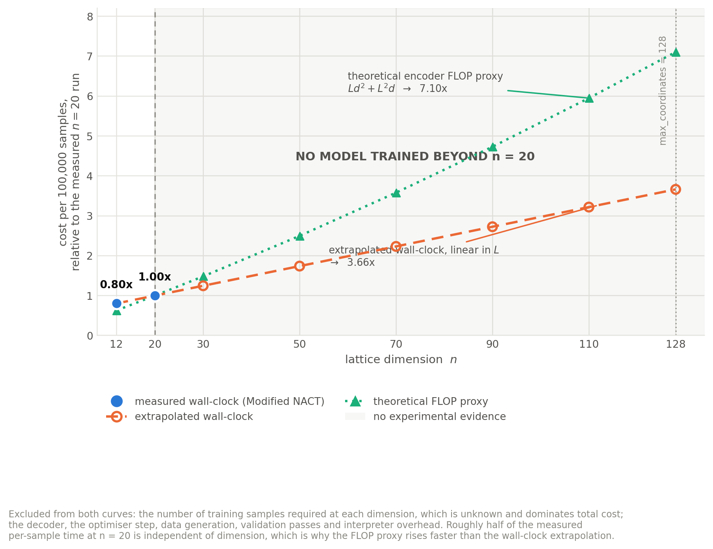

SALSA 2.0
LIGHTWEIGHT NEURAL CRYPTANALYSIS
OF LWE/RLWE
A report submitted in partial fulfilment of the requirements
for the award of the degree of
BACHELOR OF TECHNOLOGY
in
COMPUTER SCIENCE AND ENGINEERING
(ARTIFICIAL INTELLIGENCE AND MACHINE LEARNING)
Submitted by
NANDINI SHUKLA
Roll No.: [ROLL NUMBER — TO BE SUPPLIED]
Under the guidance of
Mr. Yogesh Adhana
Scientist ‘F’
Carried out at
SCIENTIFIC ANALYSIS GROUP (SAG)
Defence Research and Development Organisation (DRDO)
Metcalfe House, Civil Lines, Delhi – 110054, India
Internship period: 20 April 2026 – 20 October 2026
J.C. BOSE UNIVERSITY OF SCIENCE AND TECHNOLOGY, YMCA
FARIDABAD, HARYANA, INDIA
[MONTH AND YEAR OF SUBMISSION — TO BE CONFIRMED]
This is to certify that the work presented in this report, entitled “SALSA 2.0 — Lightweight Neural Cryptanalysis of LWE/RLWE”, was carried out by Nandini Shukla, a student of Bachelor of Technology in Computer Science and Engineering (Artificial Intelligence and Machine Learning) at J.C. Bose University of Science and Technology, YMCA, Faridabad, Haryana, during the internship period 20 April 2026 to 20 October 2026 at the Scientific Analysis Group (SAG), Defence Research and Development Organisation (DRDO), Metcalfe House, Civil Lines, Delhi – 110054.
The work was carried out under my supervision, and to the best of my knowledge it is the candidate’s own work.
|
Date: [DATE] Place: Delhi |
Mr. Yogesh Adhana Scientist ‘F’ Scientific Analysis Group, DRDO |
I hereby declare that the work presented in this report, entitled “SALSA 2.0 — Lightweight Neural Cryptanalysis of LWE/RLWE”, is an authentic record of my own work carried out under the guidance of Mr. Yogesh Adhana, Scientist ‘F’, Scientific Analysis Group, Defence Research and Development Organisation.
All software described in this report was written during the internship. The original SALSA publication and its publicly released source code were consulted as reference material for the purposes of comparison and fidelity auditing; no part of that code was copied into this project. Every numerical result reported here was produced by the software described in Chapter 4 and is recorded in a corresponding artefact file, as listed in Appendix C. Results obtained by other authors are cited and are clearly distinguished from results obtained in this work. Predictions and extrapolations are labelled as such throughout and are never presented as measurements.
The content of this report has not been submitted elsewhere for the award of any other degree or diploma.
|
Date: [DATE] Place: Delhi |
Nandini Shukla Roll No.: [ROLL NUMBER] B.Tech. CSE (AI & ML) |
I wish to record my gratitude to the Scientific Analysis Group, Defence Research and Development Organisation, for the opportunity to carry out this work and for providing access to the computational facilities used throughout the internship.
I am especially grateful to my supervisor, Mr. Yogesh Adhana, Scientist ‘F’, for his guidance over the course of the project. The insistence on staged, independently verifiable experiments, on keeping measured quantities strictly separate from predicted ones, and on never permitting the ground-truth secret to influence any stage of the attack shaped the methodology of this work more than any other single factor, and is the reason the results reported here can be audited rather than merely believed.
I thank the scientists and staff of the Scientific Analysis Group for their assistance during the internship period, and the faculty of the Department of Computer Engineering at J.C. Bose University of Science and Technology, YMCA, Faridabad, for the academic preparation that made this work possible.
Finally, I thank my family for their support throughout the duration of this internship.
Nandini Shukla
Lattice-based cryptography, and in particular the Learning With Errors (LWE) problem and its ring variant (RLWE), underpins the key-establishment and digital-signature schemes recently standardised for the post-quantum era. In 2022, Wenger, Chen, Charton and Lauter introduced SALSA, a machine-learning attack that trains a Transformer to predict the public value b from the public matrix row a, and then converts the trained model into a secret-recovery procedure by querying it on specially chosen inputs. The published attack uses a Universal Transformer of approximately 51 million parameters.
This work asks a narrow and testable question: does the SALSA attack survive a reduction of the model to between four and five million parameters, and if it fails, is the cause capacity, training budget, or input representation? The project is an independent, CPU-only reimplementation and extension. Three successive architectures were implemented and compared under a fixed training protocol: a faithful compact reduction of the published gated Universal Transformer (Salsa2-GatedUT, 4,131,200 parameters); a Numerical-Aware Coordinate Transformer (NACT, 4,241,288 parameters); and Modified NACT (4,238,208 parameters), the final model, obtained from NACT by an ablation that removes every additional numerical feature and retains only the one-token-per-coordinate input representation and its absolute coordinate embedding.
At the compact parameter budget the baseline architecture fails: at n = 12 with Hamming weight h = 2 it reaches a validation loss of 1.7413 against a marginals-only chance baseline of 1.86498, leaves 58 per cent of its probe outputs undecodable, and recovers no secret. Modified NACT, which differs by 2.6 per cent in parameter count, reaches a validation loss of 0.9891 and recovers the secret exactly. The same architecture and training budget were then applied at n = 20, where the secret was again recovered exactly. Both recoveries were confirmed by an independent residual test that receives only the public data, the candidate, the modulus and the noise scale: the centred residual standard deviation is 2.998 at n = 12 and 2.941 at n = 20 against a configured noise scale of 3.0, where an incorrect candidate would give approximately 72.5.
The evidence therefore points to the input representation, rather than to model capacity, as the principal observed source of the improvement. Two limitations are stated plainly and are not softened anywhere in this report. First, each recovery is a single secret under a single training seed, so the results are two outcomes and not a measured success rate. Second, with a Hamming weight of two the secret space contains only C(n, 2) = n(n − 1)/2 candidates — growing quadratically with the dimension, from 66 at n = 12 to 8,128 at n = 128, and therefore remaining small in absolute terms across the whole range considered. Exhaustive enumeration scored by the residual verifier developed here consequently remains a credible baseline at these dimensions, subject to the cost and the reliability of that verifier when it is applied to a large candidate set rather than to a single candidate. Nothing in this work constitutes a practical break of deployed lattice cryptography.
The complete pipeline — learning, secret recovery and verification — executes on a laptop CPU and replays from stored checkpoints in 1.19 s at n = 12 and 1.59 s at n = 20, with 12 of 12 recorded quantities reproduced and a test suite of 690 passing tests.
Keywords: neural cryptanalysis; Learning With Errors; Ring Learning With Errors; Transformer; lattice-based cryptography; post-quantum cryptography; secret recovery; model compression.
Abbreviations
| Abbreviation | Expansion |
|---|---|
| AdamW | Adam optimiser with decoupled weight decay |
| CPU | Central Processing Unit |
| DRDO | Defence Research and Development Organisation |
| FFN | Feed-Forward Network |
| FIPS | Federal Information Processing Standard |
| GELU | Gaussian Error Linear Unit |
| GatedUT | Gated Universal Transformer |
| LWE | Learning With Errors |
| ML-KEM | Module-Lattice-Based Key-Encapsulation Mechanism |
| NACT | Numerical-Aware Coordinate Transformer |
| NIST | National Institute of Standards and Technology |
| RLWE | Ring Learning With Errors |
| RMSNorm | Root Mean Square Layer Normalisation |
| RoPE | Rotary Position Embedding |
| SAG | Scientific Analysis Group |
| SALSA | The machine-learning attack on LWE of Wenger et al. (2022) |
| YAML | YAML Ain’t Markup Language (configuration file format) |
Principal symbols
| Symbol | Meaning |
|---|---|
| n | Lattice dimension; length of the secret vector |
| q | Prime modulus of the lattice problem (251 throughout) |
| σ | Standard deviation of the discrete Gaussian error (3.0 throughout) |
| h | Hamming weight: the exact number of non-zero secret coordinates |
| m | Number of samples |
| A | Public matrix whose rows are LWE samples |
| a | One row of A; a single public sample vector |
| s | The secret vector, unknown to the attack |
| s̃ | A candidate secret produced by the recovery procedure |
| e | The error (noise) vector |
| b | The public target value, b = a·s + e mod q |
| b̂ | The model’s prediction of b |
| K | Probe multiplier used in direct secret recovery |
| ei | The i-th standard basis vector |
| τ | Relative tolerance used by the acc_tau metric (0.1 throughout) |
| L | Encoder sequence length, n + 2 for Modified NACT |
| de, dd | Encoder and decoder model widths (512 and 128) |
| Te, Td | Encoder and decoder loop counts (2 and 2) |
| r | Residual, r = (b − As̃) mod q |
| C(n, h) | Binomial coefficient; the number of weight-h binary secrets |
Public-key cryptography as deployed today rests on the difficulty of integer factorisation and of the discrete logarithm problem. Both of these problems admit an efficient quantum algorithm, and consequently a sufficiently large quantum computer would render the currently deployed public-key infrastructure insecure. The response of the cryptographic community has been to identify computational problems for which no efficient quantum algorithm is known, and to build replacement schemes on them. Problems arising from point lattices have emerged as the leading candidates. In August 2024 the National Institute of Standards and Technology published FIPS 203, which standardises ML-KEM, a key-encapsulation mechanism whose security is related to the computational difficulty of the Module Learning With Errors problem [10].
The Learning With Errors problem, introduced by Regev [1], is simple to state. An adversary is given many pairs (a, b) where a is a uniformly random vector over the integers modulo q and b = a·s + e mod q for a fixed secret vector s and a small random error e. Without the error term this is a linear system that Gaussian elimination solves immediately. With the error term, and for suitable parameters, the problem is believed to be hard, and Regev gave a quantum reduction from worst-case lattice problems to it. The ring variant, RLWE, introduced by Lyubashevsky, Peikert and Regev [2], replaces the unstructured matrix by one derived from a single polynomial, which reduces key sizes and permits faster arithmetic. The structure that makes RLWE practical is also additional structure that an attacker may attempt to exploit.
The security of these schemes is assessed by estimating the cost of the best known attacks, principally lattice-reduction algorithms whose concrete cost has been studied extensively [9]. Any attack that does not fit the lattice-reduction mould is therefore of interest, because it may not be covered by existing cost estimates.
Transformers trained on symbolic mathematics have been shown to learn arithmetic and linear algebraic operations from examples alone [8]. SALSA [3] applied this observation to LWE. The attack has three parts. First, a Transformer is trained on public LWE samples to predict b from a; the secret never appears in the training data or in the loss. Second, if the model has learned the map well, then it has implicitly learned something about s, and that information is extracted by querying the model on chosen inputs it never saw during training. Third, a candidate secret produced in this way is checked by an independent statistical test on the residuals, which requires no knowledge of the true secret.
The appeal of this attack, from the point of view of a defender, is that its cost profile is entirely unlike that of lattice reduction. Its weakness, as published, is its cost in another sense: the model is large, and the sample requirements reported for even moderate dimensions run into millions of distinct instances. If the attack can be made to work at a fraction of the model size, then its practical reach — and therefore its significance for parameter selection — changes. If it cannot, then the reason it cannot is itself informative. This project set out to determine which of the two holds at a compact parameter budget.
The project was organised around three questions, fixed before experiments were run.
RQ1. Does the secret-recovery capability of the SALSA attack survive a reduction of the model from approximately 51 million parameters to between four and five million?
RQ2. If a compact model fails, is the limiting factor its capacity, its training budget, or the representation in which the problem is presented to it?
RQ3. Can the complete attack — training, secret recovery and independent verification — be executed reproducibly on a commodity CPU, without specialised hardware?
The objectives of the work were as follows.
(i) To implement a faithful but compact reduction of the published SALSA architecture, and to audit the implementation against the published description and the released source code so that every divergence is recorded rather than discovered later.
(ii) To measure the behaviour of that baseline at a compact parameter budget, and to diagnose the mechanism of any failure rather than simply reporting it.
(iii) To design, implement and evaluate an alternative input representation motivated by that diagnosis, holding the parameter budget, the training protocol and the cryptographic instance fixed.
(iv) To implement secret recovery and an independent verification procedure, with a software structure that makes it impossible for the ground-truth secret to influence either.
(v) To assemble the result into a single reproducible pipeline, and to characterise honestly what the evidence does and does not establish.
The scope of the experimental work is deliberately narrow. All demonstrated results use a prime modulus q = 251, a discrete Gaussian error of standard deviation σ = 3, binary secrets of exact Hamming weight h = 2, and circulant RLWE-style samples, at lattice dimensions n = 12 and n = 20. These are diagnostic instances. They are not cryptographically meaningful parameters, and this report does not claim otherwise at any point.
The principal contributions of this work are the following.
1. An independent, CPU-only implementation of the SALSA attack chain, with a documented fidelity audit against the published description and released code, which identified sixteen points of comparison and classified each as identical, equivalent, or divergent.
2. A measured diagnosis of why the compact baseline fails: its predictive advantage over the best input-blind constant predictor decreases monotonically as the input becomes sparser, and crosses zero before the input density reaches that of the recovery probes. The failure is therefore a property of the representation under sparse inputs, not a sudden breakdown at the probe distribution.
3. Modified NACT, a 4,238,208-parameter architecture that represents each coordinate by a single token carrying an absolute coordinate identity, halving the encoder sequence length, and which recovers the secret where the baseline does not.
4. An independent residual verification procedure, implemented as a separate module that receives only public data, together with a secret-free candidate selection rule whose guard parameter is derived from the noise scale rather than chosen by hand.
5. A scalability analysis that separates measured results, published literature, theoretical estimates and extrapolation, and that identifies the architectural constraints governing larger dimensions.
Chapter 2 reviews the original SALSA work and related research. Chapter 3 states the problem formally and defines the notation used throughout. Chapter 4 describes the proposed methodology and the Modified NACT architecture. Chapter 5 documents the experimental setup and the evaluation metrics. Chapter 6 presents and discusses the measured results. Chapter 7 analyses scalability to larger dimensions. Chapter 8 states the limitations of the work and the experiments that would resolve them. Chapter 9 concludes. Appendices give the resolved configuration, the probe detail and the provenance of every reported figure.
Regev [1] introduced LWE and established a quantum reduction from worst-case lattice problems to its average-case hardness, which is the foundation of its use in cryptography. Lyubashevsky, Peikert and Regev [2] introduced the ring variant, in which the public matrix is generated from a single polynomial, so that n samples are produced from n coefficients rather than n2. This reduces key size and allows arithmetic by fast polynomial multiplication, at the cost of introducing algebraic structure.
Concrete security estimates for LWE parameters rest principally on lattice reduction. Albrecht, Player and Scott [9] survey the available attacks and provide the estimator that is widely used for parameter selection. ML-KEM, standardised as FIPS 203 [10], uses the module variant of the problem with parameter sets ML-KEM-512, ML-KEM-768 and ML-KEM-1024.
The Transformer architecture [4] replaced recurrence with attention and is the basis of all models considered in this work. Dehghani et al. [5] proposed the Universal Transformer, in which a single layer is applied repeatedly, so that effective depth is decoupled from parameter count — a property of direct relevance when a parameter budget is binding. Csordás, Irie and Schmidhuber [6] showed that a copy gate added to each sub-layer substantially improves systematic generalisation on algorithmic tasks; SALSA adopts this gating, and so does the present work.
Charton [8] demonstrated that Transformers trained on randomly generated matrices learn a range of linear-algebraic operations, including eigenvalue decomposition and matrix inversion, and generalise beyond their training distribution. This result is the immediate intellectual predecessor of applying a Transformer to the linear-algebraic core of LWE.
Two architectural components used here are standard and are adopted for efficiency rather than novelty. RMSNorm [12] normalises by root mean square without re-centring, removing a mean subtraction and a bias parameter per normalisation. Rotary position embedding [11] encodes position by rotating query and key vectors, adding no parameters; it supplies relative position information only, a limitation that proves to be important in Chapter 4. The optimiser used throughout is AdamW [15].
SALSA [3] trains a sequence-to-sequence Transformer on public LWE samples to predict b from a, using a gated Universal Transformer encoder and decoder with approximately 51 million parameters. Integers are written as digit sequences in a fixed base. After partial training, the model is queried on chosen inputs of the form a = Kei, for which a·s = K si — so the model’s response reveals the single bit si if the model has learned the map. Candidates are checked by the distribution of the residuals. The paper reports full recovery for small and medium-sized instances with sparse binary secrets.
Two successors extend the approach. SALSA PICANTE [13] adds a data-preprocessing stage and targets binary secrets at higher dimensions. SALSA VERDE [14] extends the attack to sparse small secrets beyond the binary case. Both follow the same three-stage structure of training, recovery and verification.
These published results must be read with care in the present context. They were obtained with models an order of magnitude larger than the one studied here, with sample reuse, with a different matrix construction, and with a candidate decision rule that is resolved against the true secret. Section 2.5 records those differences explicitly. Success reported in the literature at a given dimension is therefore not evidence that the model studied in this work will succeed at that dimension.
Table 2.1: Comparison of related work. The final row describes the present project. Published figures are those stated by the cited authors; they were not re-measured in this work.
| Work | Model size | Problem setting | Dimensions reported | Principal finding | Limitation relevant here |
|---|---|---|---|---|---|
| Regev [1] | — | LWE hardness | — | Quantum reduction from worst-case lattice problems | Theoretical; gives no attack |
| Lyubashevsky et al. [2] | — | RLWE | — | Ring structure reduces key size and cost | Introduces exploitable structure |
| Charton [8] | Transformer | Linear algebra on random matrices | Matrices to 10×10 | Transformers learn linear-algebraic operations and generalise out of distribution | No cryptographic setting |
| SALSA [3] | ≈ 51 M | LWE/RLWE, sparse binary secrets, q = 251 | Up to n = 128 reported for h = 3 | End-to-end machine-learning secret recovery with statistical verification | Large model; millions of distinct samples; candidate polarity resolved against the true secret |
| SALSA PICANTE [13] | Transformer | LWE, binary secrets | Higher than SALSA | Data preprocessing extends reach | Not reproduced or re-measured in this work |
| SALSA VERDE [14] | Transformer | LWE, sparse small secrets | Higher than SALSA | Extends the attack beyond binary secrets | Not reproduced or re-measured in this work |
| This work (SALSA 2.0) | 4,238,208 | RLWE circulant, binary h = 2, q = 251, σ = 3 | n = 12, n = 20 | Exact recovery with a 12× smaller model; representation identified as the operative factor | One secret and one seed per dimension; h = 2 only |
What this table shows: the position of this project relative to published work in model size, problem setting and demonstrated dimension. What it does not establish: any claim that the dimensions reached by the published attacks are reachable by the model studied here.
A systematic comparison of this implementation against the published description and the released SALSA source was carried out before any architectural change was proposed, and is recorded in the project artefacts. Sixteen points of comparison were examined, covering sample generation, secret generation, error generation, matrix construction, integer encoding, input and output sequence construction, vocabulary, model architecture, training objective, decoding, probe construction, modular reduction of the probe multiplier, the candidate decision rule, the success criterion, and verification. The divergences material to the interpretation of the results in this report are the following.
Matrix construction. The released code builds the public matrix by negating the strict upper triangle of a circulant matrix before reduction — that is, a negacyclic construction — despite the paper’s use of the word “circulant”. This project implements a genuinely circulant construction. The two are different distributions.
Sample reuse. The released configuration reuses each distinct LWE instance approximately ten times. Every run in this project uses a fresh instance for every training sample. A sample budget here is therefore not directly comparable to a sample count reported in the literature, and sample-requirement extrapolations made from this project’s data may be pessimistic by up to an order of magnitude on that account alone.
Error distribution. The released code rounds a continuous Gaussian sample; this project samples an exact truncated discrete Gaussian. The measured total variation distance between the two distributions at σ = 3 is 0.00219.
Candidate decision rule. In the released evaluator, several candidate vectors and their complements are generated and the variant that best matches the true secret is reported as the result. That procedure consults the ground truth. The present work uses an anchored rule that compares the model’s prediction against the two values it could take under the two hypotheses for the secret bit, and therefore never consults the secret. This is a deliberate divergence, and it makes the recovery results of this project and of the released code non-comparable in the attacker’s favour: the rule used here is strictly harder.
Verification. The residual test is described in the SALSA paper but is not implemented in the released evaluator. It is implemented here as an independent module.
Modified NACT retains the published attack’s overall structure — a gated Universal Transformer encoder and decoder, digit-based integer encoding, chosen-input probing, and residual verification — and changes one thing: how a coordinate of a is presented to the encoder. Chapter 4 describes that change and the measurement that motivated it.
Let q be a prime modulus and let Zq denote the integers modulo q, represented throughout by the set {0, 1, …, q − 1}. Vectors are written in bold. The lattice dimension is n and the number of samples is m. The symbols used in this report are collected in the List of Abbreviations and Symbols in the preliminary pages.
A single LWE sample is a pair (a, b) with a drawn uniformly from Zqn and
b = a · s + e (mod q)(3.1)
where s ∈ Zqn is a fixed secret and e is drawn from an error distribution concentrated on small values. Given m samples, collect the vectors as the rows of a matrix A ∈ Zqm×n and the targets as a vector b, so that
b = As + e (mod q)(3.2)
The search problem is to recover s from (A, b). If e = 0 this is a linear system soluble by Gaussian elimination; the error is what makes the problem hard.
Error distribution. The error is an exact truncated discrete Gaussian on the integers, with probability proportional to exp(−x2 / 2σ2) over a bounded support, with σ = 3.0. Sampling uses the exact discrete distribution rather than rounding a continuous draw.
Secret distribution. The secret is binary with an exact Hamming weight: exactly h coordinates equal one and the remaining n − h equal zero. The support is drawn uniformly without replacement, so the secret is uniform over the
|Sn,h| = C(n, h) = n! / (h! (n − h)!)(3.3)
vectors of that weight. For the demonstrated setting h = 2 this gives 66 possible secrets at n = 12 and 190 at n = 20. The consequences of this search space are taken up in Section 8.3 and are central to the interpretation of the results.
Sample structure. Samples are RLWE-style. A generator vector of length n is drawn uniformly from Zqn and expanded into an n×n circulant matrix whose i-th row is the generator rotated by i positions; the rows of that block are used as samples. Producing m samples therefore requires ⌈m/n⌉ independent generator vectors. The implementation also provides the negacyclic construction, in which entries that wrap around are negated; the negacyclic variant is the one used by the released SALSA code, and the distinction is recorded in Section 2.5. All experiments reported here use the circulant construction.
A sparse secret creates a trap for any accuracy-based evaluation. Since exactly h of n coordinates are non-zero, the all-zeros vector — which contains no information whatsoever — already achieves a coordinate-wise accuracy of
(n − h) / n(3.4)
which is 0.8333 at n = 12 and 0.9000 at n = 20, both with h = 2. Coordinate-wise accuracy is therefore never, by itself, evidence of recovery. Throughout this report, a recovery is counted only when the candidate equals the true secret in every coordinate. Partial agreement is reported as a diagnostic and never as a success.
The recovery procedure follows Algorithm 1 of the SALSA paper. Suppose a model f has been trained to approximate the map a ↦ b. Consider a probe input of the form
a = K ei, K ∈ Zq(3.5)
where ei is the i-th standard basis vector. For such an input, the true relation (3.1) collapses to
a · s = K si (mod q)(3.6)
so that the noiseless target is 0 if si = 0 and K mod q if si = 1. The model’s response b̂ on this input is compared against those two values, and the coordinate is assigned to whichever is nearer in the ring. This is the anchored rule: it uses only the model’s output and the publicly chosen K, and never the true secret.
The reliability of this decision depends on how far apart the two hypotheses lie. Define the probe separation of a multiplier as
sep(K) = min( K mod q, q − (K mod q) )(3.7)
which is the ring distance between the two candidate targets. A multiplier with small separation cannot support a reliable decision, because the noise alone is of comparable size. Two such multipliers, K = 1 and K = q − 1 = 250, both of separation 1, are included in every sweep as negative controls: a correct implementation must fail on them. The recovery procedure excludes from selection any multiplier whose separation does not exceed the noise scale, using the guard
sep(K) ≥ min_separation = ⌊σ⌋ + 1(3.8)
which equals 4 at σ = 3. The guard is derived from the noise scale, a configured public quantity, and is not chosen by inspection of results.
A single multiplier produces one candidate vector. The default selection rule, named aggregate, combines the per-multiplier candidates by a separation-weighted vote across all eligible multipliers, so that better-separated probes carry more weight. Both the aggregate rule and the diagnostic single-multiplier rule operate exclusively on model predictions and public quantities.
Given a candidate s̃, form the residual vector on held-out public samples
r = (b − A s̃) mod q(3.9)
and map each entry to its centred representative in [−q/2, q/2). If s̃ = s then by (3.2) the residual is exactly the error vector, so its entries are small and its standard deviation is close to σ. If s̃ ≠ s then A(s − s̃) is a non-trivial modular combination, and the residual is close to uniform on Zq, whose standard deviation is
√((q2 − 1) / 12) = 72.457 for q = 251(3.10)
The separation between the two cases is therefore roughly a factor of 24, which is what makes the test decisive. Four acceptance criteria are applied, all expressed against the configured σ and against input-blind baselines, never against the true secret:
C1: the centred residual standard deviation is at most 1.5σ;
C2: the mean absolute centred residual is at most 1.5σ√(2/π);
C3: the candidate standard deviation is below one quarter of the smallest baseline standard
deviation;
C4: at least 99 per cent of centred residuals satisfy |r| ≤ 3σ.
A candidate is accepted only if all four hold. The verification module receives the tuple (A, b, s̃, q, σ) and nothing else. The criteria were calibrated for the assessment of a single candidate; their false-acceptance rate when applied across a large candidate set has not been measured in this project, a point taken up in Section 8.3.
The system is organised into four stages that are kept structurally separate in the source code, so that the isolation of the secret is a property of the software architecture and not of programmer discipline. Figure 4.1 shows the complete workflow.

What this figure shows: the order of the stages and the boundary across which the ground-truth secret may not pass. What it does not establish: anything about the success rate of the recovery stage, which is reported in Chapter 6.
Stage 1 trains the model on public samples only; the trainer requests unlabelled batches, and the secret is not an argument to any function it calls. Stage 2 freezes the trained model, queries it on probe inputs, and produces a candidate. Stage 3 verifies that candidate from public data. Stage 4 loads the true secret and reports coordinate accuracy and Hamming distance, purely for the purpose of this report; invoking the pipeline with evaluation disabled omits stage 4 entirely and the attack runs end to end with no ground truth consulted at any point.
Integers are written as fixed-width digit sequences in base B = 81, least significant digit first. Since 812 = 6561 ≥ 251, two digits suffice for every element of Z251, so each coordinate of a occupies exactly two digit tokens. The vocabulary has 85 entries: four special tokens (padding, beginning of sequence, end of sequence and separator) and the 81 digit values. Under the representation used throughout — no separator token — an input sequence for dimension n has 2n + 2 tokens and the target sequence for the single integer b has four tokens. At n = 12 these are 26 and 4 respectively.
Two properties of this encoding matter later. First, the digit width depends only on q and B, not on n, so the front end is unchanged as the dimension varies. Second, the target length is independent of n: a sample always supplies one value of b, that is at most log2 251 = 7.97 bits of supervision, however large the input becomes.
The baseline, Salsa2-GatedUT, is a compact reduction of the published architecture: a gated Universal Transformer with an encoder width of 512 and a decoder width of 128, one shared encoder layer applied twice and one shared decoder layer applied twice, eight encoder heads and four decoder heads, RMSNorm, rotary position embedding, a two-matrix GELU feed-forward block of expansion factor four, no biases, and a copy gate on every sub-layer. It has 4,131,200 parameters.
At n = 12 and h = 2, on the training budget described in Chapter 5, this model reaches a validation loss of 1.7413 against a marginals-only chance baseline of 1.86498, and recovers no secret from any of the ten probe multipliers. The important question is why.
The diagnosis was obtained by feeding the frozen baseline inputs of systematically decreasing density and scoring its predictions not against chance but against the best input-blind constant predictor on the same targets. This correction is necessary because sparser inputs make a constant answer a better predictor, so raw accuracy understates the collapse. The resulting quantity, the lift, is reported in Section 6.5. It decreases monotonically with sparsity and crosses zero between eight and six non-zero coordinates — that is, well before the single-non-zero density of the recovery probes. The recovery probes therefore lie at the far end of the same curve, not at a separate cliff. The model does not fail at the probes; it has already ceased to carry information about its input by the time it reaches them.
Two observations followed from that diagnosis.
First, the relation b = Σi ai si binds coordinate index i to secret bit si. To learn it, the model must know which coordinate it is reading. The baseline supplies position only through rotary embedding, which is purely relative: it tells the model that two tokens are a certain distance apart, not that a token is coordinate seven. Absolute coordinate identity is therefore not directly expressible in the baseline front end.
Second, under the baseline layout a coordinate is spread across two token positions. The predicate “this coordinate is zero”, which is exactly the predicate that matters for a sparse probe, is a conjunction across those two positions: in base 81, the low digit is zero for 4 of 251 residues and the high digit for 81 of them, but only one residue satisfies both. The encoder must spend attention computing that conjunction once per coordinate on every forward pass.
Both observations point to the same remedy: represent each coordinate by a single token, and give that token an absolute coordinate identity. With one token per coordinate, position is coordinate index.
The front end reconstructs each coordinate value losslessly from the digit tokens the codec already produces, embeds it as a single vector, and adds a learned absolute coordinate embedding:
ei = Σw DigitEmb[w, dw(i)] + CoordEmb[i](4.1)
so that the encoder sequence is ⟨bos⟩ e0 … en−1 ⟨eos⟩, of length n + 2 rather than 2n + 2. Everything downstream — the encoder body, the whole decoder and the output interface — is the baseline module, unmodified, so a Modified NACT checkpoint speaks exactly the same target language as a baseline checkpoint and every downstream script operates on it without change. Figure 4.2 shows the architecture in full.

What this figure shows: the token flow, the shared-weight blocks, the widths and head counts actually used, and the parameter totals of the encoder and decoder. What it does not establish: the contribution of any individual component, which Section 6.6 discusses and which remains only partially attributed.
The coordinate embedding table is allocated with a fixed capacity of 128 coordinates, so its size does not depend on n. Consequently the parameter count of the model is identical at n = 12 and n = 20; only the encoder sequence length changes, from 14 to 22 tokens. This property is examined again in Chapter 7, where its limits are made precise.
The intermediate architecture, full NACT, added four numerical features per coordinate (a zero indicator, the signed centred residue, and the cosine and sine of 2πx/q, the last two being the characters of Zq), a learned zero vector, and a learned per-head attention bias on keys at zero coordinates. Two competing explanations for its advantage were possible: the coordinate-token layout, or the numerical features.
A single ablation separates them. Removing every numerical feature while retaining the one-token layout and the coordinate embedding yields Modified NACT, which differs from full NACT by 3,080 parameters, or 0.073 per cent — far too small for capacity to explain any difference in outcome. The result, reported in Section 6.6, is that Modified NACT matches full NACT within the seed-to-seed variation of NACT itself on all three primary metrics. The one-token representation, not the numerical features, therefore carries the observed improvement, subject to the caveat stated in Section 6.6.
Table 4.1: Component comparison of the three architectures implemented in this project. All three were trained under the identical protocol of Chapter 5.
| Component | Salsa2-GatedUT (V1) | Salsa2-NACT (full) | Modified NACT (final) |
|---|---|---|---|
| Tokens per coordinate | 2 digit tokens | 1 coordinate token | 1 coordinate token |
| Encoder sequence length | 2n + 2 | n + 2 | n + 2 |
| Coordinate identity | RoPE (relative only) | Learned absolute embedding | Learned absolute embedding |
| Numerical features | none | 4 per coordinate | none |
| Learned zero vector | no | yes | no |
| Sparse attention bias | no | yes, 8 scalars | no |
| Encoder body, decoder, gating, RMSNorm, RoPE | Identical in all three | ||
| Trainable parameters | 4,131,200 | 4,241,288 | 4,238,208 |
What this table shows: that the three models differ in the input front end alone, and that their parameter counts lie within 2.7 per cent of one another. What it does not establish: that the parameter difference is irrelevant to performance — that is an inference supported by the ablation of Section 6.6, not by this table.
Figure 4.3 places these three models beside the published SALSA model.

What this figure shows: the scale of the reduction attempted, and that all three implemented models satisfy the four-to-five-million parameter budget. What it does not establish: comparability of capability — the published model was trained on a different construction with sample reuse and a far larger sample budget, as recorded in Section 2.5.
Parameter counts are verified three ways: by summing the tensors of the constructed model, by an independent closed-form expression derived from the architecture, and against the budget declared in the configuration file. A run aborts if the three disagree or if the count falls outside the declared budget. The breakdown is given in Table 4.2.
Table 4.2: Parameter breakdown of Modified NACT, as recorded in the run header of the n = 12 experiment.
| Component | Parameters | Shape |
|---|---|---|
| Encoder digit embeddings | 82,944 | 2 × 81 × 512 |
| Encoder special embeddings | 2,048 | 4 × 512 |
| Coordinate embedding | 65,536 | 128 × 512 |
| Encoder attention | 1,048,576 | 4 × 512 × 512 |
| Encoder feed-forward | 2,097,152 | 2 × 512 × 2048 |
| Encoder copy gate | 524,800 | 2 × 5122 + 512 |
| Encoder normalisation | 1,536 | 3 × 512 |
| Decoder embedding | 10,880 | 85 × 128 |
| Decoder self-attention | 65,536 | 4 × 128 × 128 |
| Decoder cross-attention | 163,840 | 2 × 1282 + 2 × 512 × 128 |
| Decoder feed-forward | 131,072 | 2 × 128 × 512 |
| Decoder copy gate | 32,896 | 2 × 1282 + 128 |
| Decoder normalisation | 512 | 4 × 128 |
| Output projection | 10,880 | 128 × 85 |
| Total | 4,238,208 | encoder 3,822,592 + decoder 415,616 |
What this table shows: where the parameter budget is spent — 90.2 per cent in the encoder, and 74.0 per cent in the encoder attention and feed-forward blocks alone. What it does not establish: that this allocation is optimal; no width or depth sweep was performed at the final architecture.
The recovery module implements the procedure of Section 3.5. It sweeps ten probe multipliers, chosen to span the available separations: K ∈ {1, 31, 63, 94, 125, 126, 157, 188, 220, 250}, with separations {1, 31, 63, 94, 125, 125, 94, 63, 31, 1}. The two multipliers of separation 1 are the negative controls and are excluded from selection by the guard of equation (3.8), leaving eight informative multipliers. The module exposes no parameter through which a secret could be supplied, and an automated test inspects the source text of the recovery package for any reference to ground truth.
The verification module implements the test of Section 3.6 as an independent component with its own interface. Running the two in sequence and comparing their conclusions provides a cross-check that does not depend on either being correct for the right reason.
Table 5.1: Computing environment, as recorded in the run headers of the two final experiments.
| Item | Value |
|---|---|
| Processor | AMD64 Family 23 Model 104 (consumer laptop CPU) |
| Compute device | CPU only; no GPU used at any point |
| Threads | 6 compute threads, 6 inter-operation threads |
| Numerical precision | float32 |
| Operating system | Windows 10.0.26200 |
| Python | 3.10.11 |
| Deep-learning framework | PyTorch 2.13.0+cpu |
| Other dependencies | NumPy, PyYAML, psutil; matplotlib for analysis plots only |
| Peak resident memory | 446.8 MB at n = 12; 503.7 MB at n = 20 |
What this table shows: that the complete attack chain was developed and executed on commodity hardware without specialised accelerators, which addresses research question RQ3. What it does not establish: the cost of training at any dimension not listed, which is treated in Chapter 7.
Every experiment is defined by a YAML configuration file together with a fixed seed. Configurations inherit from one another, so that an experiment which should differ from its predecessor in exactly one setting does so by construction and not by the correctness of a manual copy. The final n = 20 configuration, for instance, inherits the n = 12 configuration and overrides a single field.
Table 5.2: Experimental configuration for the two final runs. Values marked identical are the same object in the configuration inheritance chain, not independently restated values.
| Setting | n = 12 run | n = 20 run |
|---|---|---|
| Lattice dimension n | 12 | 20 |
| Modulus q | 251 (identical) | |
| Error standard deviation σ | 3.0, truncated discrete Gaussian (identical) | |
| Secret distribution | Binary, exact Hamming weight h = 2 (identical) | |
| Sample structure | RLWE, circulant (identical) | |
| Sample reuse | 1 — every training sample is a fresh instance | |
| Training samples | 100,000 budgeted; 100,032 seen | |
| Validation samples | 2,048 (identical) | |
| Encoding base | 81, least significant digit first, fixed width, no separator | |
| Vocabulary | 85 tokens | |
| Input / target tokens | 26 / 4 | 42 / 4 |
| Encoder sequence length | 14 | 22 |
| Optimiser | AdamW, weight decay 0.01 (identical) | |
| Learning rate | 5 × 10−4, cosine schedule, 200 warm-up steps | |
| Batch size | 64 (identical) | |
| Epochs / steps | 20 epochs, 79 steps per epoch, 1,563 total steps | |
| Gradient clipping | 1.0 (identical) | |
| Checkpoint selection | Minimum validation loss | |
| Seed | 0, deterministic mode enabled | |
| Configuration fingerprint | f148ac749a6db162 | bbf51d2d5d8182c5 |
What this table shows: that the two dimensions were trained under an otherwise identical protocol, so the comparison between them is controlled. What it does not establish: that the budget is adequate at either dimension; it is a fixed pilot budget, not a tuned one.
Figure 5.1 shows the experimental workflow and the reproducibility gate.

What this figure shows: the order of operations and the separation of the recovery and verification stages from evaluation. What it does not establish: the outcome of any stage; those are reported in Chapter 6.
Five distinct quantities are reported, and they are not interchangeable. Confusing any two of them would materially misrepresent the result, so each is defined here together with its chance level. All chance baselines are computed exactly from q, the encoding and the tolerance; none depends on n, so they transfer unchanged between dimensions.
Validation loss. Mean cross-entropy in nats per scored target token. The meaningful zero point is not the uniform-distribution loss of 4.44265 but the marginals-only loss of 1.86498 — the loss achieved by a predictor that knows the marginal distribution of each digit position and nothing about the input. A model above that value has learned nothing useful about its input.
acc_tau. The fraction of validation samples for which |b − b̂| ≤ τq, with τ = 0.1, so the absolute tolerance is 25.1. The chance level is 0.19287. This metric is computed as a plain absolute difference. A circular variant is recorded separately and clearly labelled as a diagnostic, because computing the tolerance in ring distance flatters the model.
Exact integer accuracy. The fraction of samples for which b̂ equals b exactly. The chance level is 1/251 = 0.00398.
Token accuracy. The fraction of correctly predicted target tokens. Its chance level is 0.44621, which is high because the target sequence contains structurally predictable positions; a token accuracy near 45 per cent is therefore free and must never be read as evidence of learning.
Decode failure rate. The fraction of model outputs that do not parse as a valid integer. This is distinct from accuracy: a model may emit well-formed but wrong answers, or ill-formed ones. The distinction becomes decisive under probe inputs, as Section 6.5 shows.
Three further quantities describe the attack rather than the predictor, and are reported separately throughout.
Exact secret recovery. A binary outcome per secret: the candidate matches the true secret in every coordinate, or it does not. Partial matches are not successes. Because a sparse secret makes the all-zeros vector score 0.8333 at n = 12, coordinate accuracy is reported only alongside the exact-recovery outcome and never in place of it.
Informative probe multipliers recovered. How many of the eight multipliers that pass the separation guard independently yield the correct secret. The two excluded multipliers are negative controls that must fail.
Probe decode validity. The fraction of probe queries whose output parses as a valid integer. A model whose probe outputs do not decode cannot support recovery regardless of its validation metrics.
Every experiment is reproducible from its configuration file and a fixed seed. Each checkpoint stores a fingerprint of the configuration that produced it, and the pipeline refuses to load a checkpoint whose fingerprint does not match the configuration requested, which prevents the accidental mixing of runs.
The two final results replay from stored checkpoints in 1.19 s at n = 12 and 1.59 s at n = 20. A replay script re-derives six recorded quantities per dimension — exact recovery, coordinate accuracy, Hamming distance, the count of successful multipliers, the verification outcome and the parameter count — and compares each against the stored artefacts; all twelve agree. The recorded test suite result is 690 passing tests with 2 skipped and none failing, covering the lattice mathematics, the parameter budget, the encoding round trip, the isolation of the secret, the pipeline and regression cases.
Table 6.1 reports the prediction metrics of the final model at both demonstrated dimensions, against the exactly computed chance baselines.
Table 6.1: Measured prediction performance of Modified NACT. Both runs used 100,032 training samples and were evaluated on 2,048 held-out validation samples.
| Metric | n = 12 | n = 20 | Chance baseline |
|---|---|---|---|
| Validation loss (nats/token) | 0.9891 | 0.9764 | 1.86498 (marginals only) |
| acc_tau (τ = 0.1) | 0.9839 | 0.9863 | 0.19287 |
| Exact integer accuracy | 0.0913 | 0.1035 | 0.00398 |
| Token accuracy | 0.6934 | 0.6995 | 0.44622 |
| Greedy token accuracy | 0.6771 | 0.6851 | — |
| Decode failure rate | 0.0000 | 0.0000 | — |
| Mean absolute error | 7.1465 | 6.5093 | — |
| Median absolute error | 3.0 | 3.0 | — |
| Best epoch | 19 | 19 | — |
| Training wall-clock (s) | 1,146.3 | 1,424.2 | — |
| Throughput (samples/s) | 108.9 | 87.4 | — |
What this table shows: that the model predicts b far above every chance baseline at both dimensions, and that its median absolute error of 3 equals the noise scale — that is, the typical prediction is as close to the truth as the noise permits. What it does not establish: anything about secret recovery, which is a separate claim reported in Section 6.2. In particular, an exact integer accuracy near 0.10 is not a recovery rate.
Figure 6.1 displays the two measured points for each of the two principal metrics.

What this figure shows: the measured values and their distance from chance. What it does not establish: a trend. Two points, one seed each, cannot distinguish a flat relationship from a declining one, and the connecting line is drawn only to associate the two measurements of the same model.
Performance does not degrade from n = 12 to n = 20; the loss is marginally lower and acc_tau marginally higher at the larger dimension. With one seed per dimension it is not possible to distinguish this from seed-to-seed variation, and no claim of improvement with dimension is made.
Table 6.2: Measured secret-recovery results. Each dimension was attacked with one secret, derived deterministically from the training seed.
| Quantity | n = 12, h = 2 | n = 20, h = 2 |
|---|---|---|
| Exact secret recovery | YES | YES |
| Independent secrets attacked | 1 | 1 |
| Coordinate accuracy | 1.0000 | 1.0000 |
| Hamming distance to true secret | 0 | 0 |
| Informative multipliers recovered | 8 of 8 | 8 of 8 |
| Negative controls (K = 1, 250) | excluded; failed as required | excluded; failed as required |
| Probe decode validity | 1.0000 | 1.0000 |
| Selection rule | aggregate | aggregate |
| Separation guard | 4 | 4 |
| Candidate Hamming weight | 2 | 2 |
| Secret search space C(n, 2) | 66 | 190 |
What this table shows: that the attack recovered the secret exactly at both dimensions, and that all eight informative multipliers agreed independently, which is a strong internal consistency check. What it does not establish: a recovery rate. One secret at each dimension is one outcome, not a frequency, and no confidence interval can be attached to it.
The agreement of all eight informative multipliers is worth emphasising, because the multipliers are different queries that share only the underlying model. The two multipliers that fail are precisely the two that must fail: K = 1 and K = 250 have ring separation 1, so the two hypotheses for a secret bit are adjacent and the noise alone is three times larger than the gap between them.
Table 6.3: Residual verification. The verifier receives only (A, b, candidate, q, σ).
| Quantity | n = 12 | n = 20 |
|---|---|---|
| Verification outcome | PASS | PASS |
| Centred residual standard deviation | 2.998 | 2.941 |
| Configured σ | 3.0 | 3.0 |
| Uniform reference √((q2−1)/12) | 72.457 | 72.457 |
| Ratio, reference to observed | 24.2 | 24.6 |
| Acceptance criteria satisfied | 4 of 4 | 4 of 4 |
What this table shows: that the recovered candidates are correct by a test that is entirely independent of the model and of the recovery procedure, and that the margin of the test is approximately a factor of 24. What it does not establish: that the recovery procedure is reliable in general; the verifier confirms a particular candidate, not a method.
This verification is the single most important control in the project. The recovery procedure could in principle be subtly wrong and still produce a candidate; the residual test would then reject it. That the residual standard deviation lands within 0.06 of the configured noise scale, against an alternative of 72.457, leaves no reasonable doubt that the recovered vectors are the secrets that generated the data.
Table 6.4: Architecture comparison at n = 12, h = 2 under the identical training protocol and an identical parameter budget.
| Model | Parameters | Validation loss | acc_tau | Probe decode validity | Exact recovery |
|---|---|---|---|---|---|
| Salsa2-GatedUT (V1) | 4,131,200 | 1.7413 | 0.3550 | 0.417 | NO (0 of 10 K) |
| Modified NACT | 4,238,208 | 0.9891 | 0.9839 | 1.000 | YES (8 of 8 K) |
| Difference | +2.6 % | −0.7522 | +0.6289 | +0.583 | — |
What this table shows: that a 2.6 per cent difference in parameter count accompanies the difference between no recovery and exact recovery, which makes capacity an implausible explanation. What it does not establish: that representation is the only operative factor; it establishes that capacity at this budget is not the binding one.
The baseline’s validation loss of 1.7413 sits close to the marginals-only baseline of 1.86498, meaning that at this budget it has largely not learned input-dependent structure. On probe inputs it left 58 per cent of its outputs undecodable and answered with a single constant on eight of the ten multipliers. These are the signatures of a model that has fallen back on the output marginals.
Table 6.5 reports the lift over the best input-blind constant predictor as the input density is reduced. The correction is essential: as inputs become sparser the constant predictor itself improves, so an uncorrected accuracy would understate the collapse.
Table 6.5: Lift over the best input-blind constant predictor, by number of non-zero input coordinates, at n = 12. A positive lift means the model’s output carries information about its input; a negative lift means it does not.
| Non-zero coordinates | 12 | 10 | 8 | 6 | 4 | 2 | 1 | Probes |
|---|---|---|---|---|---|---|---|---|
| Salsa2-GatedUT (V1) | +0.1309 | +0.0991 | +0.0718 | −0.0527 | −0.1787 | −0.3730 | −0.4800 | −0.4417 |
| Modified NACT | +0.7651 | +0.7393 | +0.7222 | +0.5981 | +0.4346 | +0.1895 | +0.0562 | +0.0500 |
What this table shows: that the baseline’s lift falls monotonically with sparsity (Spearman ρ = 1.000; exact permutation test p = 0.0004) and crosses zero between eight and six non-zero coordinates, while Modified NACT never crosses zero. The recovery probes lie at the extreme of the same curve, not on a separate cliff. What it does not establish: a causal mechanism at the level of individual attention heads; the measurement is behavioural.
This is the result that motivated the architecture. The baseline does not fail because probe inputs are out of distribution in some unanalysable way; it fails because its output ceases to depend on its input once the input is sufficiently sparse, and the probes are the sparsest inputs of all. Modified NACT maintains a positive lift throughout and holds probe decode validity at 1.000 where the baseline collapses to 0.417.
The ablation described in Section 4.6 removed six components at once. Under matched depth, seed and budget, every difference between full NACT and Modified NACT fell inside the seed-to-seed variation measured for NACT itself.
Table 6.6: Ablation result at n = 12, seed 0. The three-sigma seed band is the variation measured across three NACT training seeds under the same protocol.
| Metric | NACT (full) | Modified NACT | Difference | 3σ seed band | Resolvable? |
|---|---|---|---|---|---|
| Validation loss | 0.9388 | 0.9891 | +0.0503 | 0.0696 | no |
| acc_tau | 0.9839 | 0.9839 | +0.0000 | 0.0064 | no |
| Exact integer accuracy | 0.1011 | 0.0913 | −0.0098 | 0.0275 | no |
What this table shows: that removing the four numerical features, the zero vector and the sparse attention bias cost nothing measurable in this setting, and that Modified NACT retained 100 per cent of the baseline-to-NACT gap in acc_tau. What it does not establish: that those components are useless. A single seed at a single dimension cannot establish a null result, and the components may matter at larger n, larger h, or longer training.
A multi-secret control was run using three checkpoints trained under different seeds, which therefore target three distinct secrets. All three secrets were recovered exactly and all three candidates passed verification, with a mean of 7.67 of 8 informative multipliers succeeding and a mean probe decode validity of 1.000.
This control must be attributed correctly. The three checkpoints are full NACT models of 4,241,288 parameters, not Modified NACT. The result therefore demonstrates that the recovery procedure is not specific to one secret for the immediately adjacent architecture; it is not a multi-secret result for the final model. For Modified NACT itself the evidence remains one secret at n = 12 and one at n = 20.
On research question RQ1. Secret-recovery capability does survive reduction to approximately 4.24 million parameters, at the dimensions and Hamming weight tested. It does not survive naive reduction: the faithful compact reduction of the published architecture fails completely at the same budget.
On research question RQ2. The limiting factor at this budget is the input representation. Three independent lines of evidence support this. The parameter counts of the failing and succeeding models differ by 2.6 per cent, which is too small to explain the difference in outcome. The ablation shows that removing six components at a cost of 0.073 per cent of the parameters changes nothing measurable, so the operative change is the layout rather than the added features. And the sparse-input measurement identifies a specific mechanism — loss of input dependence under sparse inputs — which the one-token representation with absolute coordinate identity directly addresses.
On research question RQ3. The complete chain runs on a laptop CPU. Training took 19 minutes at n = 12 and 24 minutes at n = 20, peak memory stayed below 510 MB, and the stored results replay in 1.19 s and 1.59 s respectively.
What these results do not show. Three statements are necessary here and are not hedged elsewhere in this report. First, two single-seed recoveries are two outcomes and not a rate; no statistical reliability has been established, and a recovery rate cannot be inferred from them. Second, the demonstrated instances are diagnostic: with h = 2 the search space contains 66 secrets at n = 12 and 190 at n = 20, small enough that exhaustive enumeration remains a credible competing baseline, as Section 8.3 sets out. Third, no claim is made that any deployed lattice-based scheme is weakened by this work.
This chapter forecasts behaviour at dimensions that were never trained. To keep measured and predicted quantities distinct, every statement below belongs to exactly one of four classes.
Table 7.1: Evidence classes used throughout this chapter.
| Class | Meaning |
|---|---|
| Observed | Measured in this project and recorded in an artefact file |
| Literature | Reported by other authors for a different model and setting |
| Theoretical | Derived from the implemented architecture by calculation, with assumptions stated |
| Extrapolated | A prediction. Not measured, and not to be read as a result |
The coordinate-embedding ceiling. The coordinate table is allocated with a capacity of 128 and the forward pass raises an error if n exceeds it. The dimension n = 128 fits exactly. Above 128 the table is allocated at size n, which adds 512 parameters per additional coordinate; the model is then no longer a 4,238,208-parameter model and the pipeline, which asserts the expected parameter count, rejects it. (Theoretical.)
Only the first n rows are trained. The front end indexes rows 0 to n − 1 of the coordinate table, so only those rows receive gradient. A checkpoint trained at n = 12 has 116 of its 128 coordinate rows still at their random initialisation. Loading such a checkpoint at n = 30 is legal, raises no error and produces output — while eighteen of the thirty coordinate identities are random vectors the encoder has never seen. (Theoretical.)
This is the single most important distinction in this chapter: technical compatibility with a dimension is not demonstrated secret-recovery capability at that dimension. The table is sized at 128 so that the architecture covers every dimension without a change in parameter count. It does not mean that one checkpoint covers every dimension, and it says nothing whatever about whether recovery at n = 128 would succeed. Three independent reasons make retraining mandatory at every new dimension: the untrained coordinate rows; the configuration fingerprint, which causes the pipeline to refuse a mismatched checkpoint; and the design of the attack itself, in which one model is trained per secret, so that the secret at n = 30 is a different object with nothing to transfer.
Sequence length and attention cost. The one-token representation gives an encoder sequence of L = n + 2, which is 130 at n = 128 against 258 for the baseline layout. Per application of the encoder layer, attention costs O(L2de) and the feed-forward block costs O(Lde2). With de = 512, de2 = 262,144 against L2 = 16,900 at n = 128, so the feed-forward term dominates across the entire range considered and cost is approximately linear in L. Quadratic attention growth is therefore not the binding constraint below n = 128. (Theoretical.)
Fixed supervision per sample. The target is four tokens regardless of n, because b is a single element of Zq. As n grows, the input grows linearly and the number of terms in the sum grows linearly, while the supervision per sample stays fixed at no more than 7.97 bits. The signal per sample therefore falls roughly as 1/n while the function to be learned becomes harder, which is a structural reason to expect sample requirements to grow faster than linearly. (Theoretical.)
Training-set diversity. Producing m circulant samples requires ⌈m/n⌉ independent generator vectors. At a fixed budget of 100,032 samples this falls from 8,336 independent generators at n = 12 to 782 at n = 128. (Theoretical.)
What does not constrain scaling. The digit width depends only on q and the base; rotary embedding is parameter-free and has no table to outgrow; the parameter count is genuinely invariant in n up to 128; and the chance baselines depend on q and τ rather than on n, so the pre-registered thresholds transfer unchanged between dimensions.
Two cost models are given, both relative to the measured n = 20 run and both per 100,000 training samples. Neither includes the number of samples required at a given dimension, which is unknown and which dominates total cost.
The first fits a straight line through the two measured throughputs, giving
time per sample (ms) ≈ 5.236 + 0.2819 × L(7.1)
Two points determine a two-parameter model exactly, so this fit has no residual and carries no evidence about its own correctness. It is used because it is the only model the measured data can support, and because it includes the large dimension-independent overhead — the decoder, the optimiser step, the data pipeline and interpreter costs — that a pure operation count omits. (Extrapolated.)
The second is a theoretical encoder operation count, Lde2 + L2de, normalised at L = 22. It excludes the decoder, cross-attention, the optimiser step, data generation, validation passes, memory bandwidth and interpreter overhead. (Theoretical.)

What this figure shows: that per-sample cost grows modestly with dimension, and that the two cost models disagree by roughly a factor of two at n = 128 because about half the measured per-sample time is independent of dimension. What it does not establish: total training cost at any untested dimension, because the number of samples required is unknown and is the dominant factor. The dashed and dotted curves are forecasts, not measurements.
The two models give 3.66× and 7.10× respectively at n = 128. The measured figures should be treated as a floor: the baseline architecture, for which three measured throughput points exist, grows faster than linearly in L. Memory is not a constraint. Measured peak resident memory was 446.8 MB at n = 12 and 503.7 MB at n = 20, and activation memory scales as batch × L × de, so a dimension of 128 remains well within the memory of a commodity machine.
No Modified NACT model has been trained above n = 20. Two models of comparable size were, however, trained at n = 30 earlier in the project, at Hamming weight h = 3 and on the same 100,032-sample budget. Both reached chance on every metric.
Table 7.2: Measured results at n = 30 for architectures other than the final model. Both runs used h = 3, not h = 2.
| Model | Parameters | Validation loss | acc_tau | Exact accuracy |
|---|---|---|---|---|
| Salsa2-GatedUT | 4,131,200 | 1.8426 | 0.1343 | 0.0029 |
| Salsa2-CompactTransformer | 4,251,520 | 1.8431 | 0.1479 | 0.0024 |
| Chance baseline | — | 1.86498 | 0.19287 | 0.00398 |
What this table shows: that at n = 30 two models in the same parameter class reached chance on loss and fell below chance on acc_tau and exact accuracy under this sample budget. These are clean negative results. What it does not establish: a bound on Modified NACT, which is a different architecture and was tested at a different Hamming weight.
The SALSA paper reports sample counts between 3,913,424 and 29,210,829 (221.9 to 224.8) for n = 30 with q = 251 and a sparse binary secret. That range exceeds this project’s entire per-run budget by a factor of between 39 and 292, for the smallest dimension in the extrapolation range. Two qualifications apply. The published counts refer to a model roughly twelve times larger. They also count distinct instances under a scheme that reuses each instance approximately ten times, whereas every sample here is fresh, so the budgets are not directly comparable and this project’s sample-requirement extrapolations may be pessimistic by up to an order of magnitude on that account. (Literature.)
Table 7.3: Scalability forecast for Modified NACT. The recovery outlook concerns whether a model retrained at that dimension on a budget of this order would plausibly recover the secret; it is not a claim that such a recovery would be cryptographically meaningful.
| n | L | Evidence status | Recovery outlook | Cost per 100k vs n = 20 | Principal risk | Confidence |
|---|---|---|---|---|---|---|
| 12 | 14 | Observed: recovered and verified | Demonstrated | 0.80× | None | High |
| 20 | 22 | Observed: recovered and verified | Demonstrated | 1.00× | One seed, one secret | High |
| 30 | 32 | Observed for other architectures at h = 3, both at chance | Uncertain | 1.25× | Sample budget insufficient; regime change between 20 and 30 | Medium |
| 50 | 52 | Extrapolated | Uncertain to unlikely at this budget | 1.74× | Sample requirement far above budget | Low |
| 70 | 72 | Extrapolated | Unlikely at this budget | 2.23× | As above; capacity adequacy untested | Low |
| 90 | 92 | Extrapolated | Unlikely at this budget | 2.73× | As above | Low |
| 110 | 112 | Extrapolated | Unlikely at this budget | 3.22× | As above | Low |
| 128 | 130 | Extrapolated; architectural ceiling reached exactly | Unlikely at this budget | 3.66× | As above; coordinate capacity exhausted | Low |
What this table shows: the status of the evidence at each dimension and the calculable part of the cost. What it does not establish: validation loss, acc_tau, probe success, decode validity or recovery probability at any dimension above 20. Those quantities are not reliably estimable from the available evidence, and no numerical value is given for them anywhere in this report.
Performance need not degrade smoothly with dimension. Three mechanisms present in this system could produce an abrupt transition rather than a gradual decline.
Decode-validity collapse. Recovery requires the model’s output to parse as an integer on probe inputs far outside the training distribution. The baseline left 58 per cent of probe outputs undecodable at n = 12 while still scoring above chance on in-distribution validation data. Decode validity can therefore fail abruptly while validation metrics still look healthy.
The constant-predictor attractor. As inputs become sparser, a constant output becomes a better predictor. The measured lift curve of Section 6.5 crosses zero at a specific density; past that crossing the output carries no information about the input at all. This is a threshold, not a slope.
Budget cliff. If the sample requirement crosses the fixed budget between two dimensions, the observed result jumps from learning to chance with nothing in between. That is the shape of the measured transition from n = 20 to n = 30 for the baseline architecture.
The largest dimension at which a cautious, evidence-based prediction is reasonable is n = 30 — and the prediction is that the experiment would be informative, not that it would succeed. Four reasons support this. It is one increment beyond measured ground. It is the only untested dimension at which a same-budget negative control already exists, so a single run there is a controlled comparison rather than an isolated number. It would be the third point, at which the shape of the trainability curve stops being a modelling choice and becomes a measurement; an earlier internal extrapolation at n = 30, fitting five plausible models through two points, produced estimates spanning a factor of 29, which is precisely the condition a third point remedies. And the cost is bounded and known to within a small factor, at approximately 1.25 times the n = 20 run per 100,000 samples.
Two design requirements follow. The Hamming weight must match the existing n = 30 controls, or a fresh control must be run at h = 2, since otherwise the new result would compare against nothing. And the thresholds must be pre-registered before the results are inspected; because the chance baselines do not depend on n, the same three bars used at n = 20 apply unchanged.
Dimensions of 50 and above are not currently predictable. They lie three to six increments beyond evidence, past a dimension at which two comparable models already failed, on a budget one to two orders of magnitude below the only published figure for the easier case.
The central limitation is the number of independent trials. Modified NACT was evaluated against one secret at n = 12 and one at n = 20, each under a single training seed. Two successes are two outcomes. They cannot be converted into a success rate, no confidence interval can be attached to them, and they do not exclude the possibility that a different secret or a different seed would have failed. The multi-secret control of Section 6.7, which recovered three of three, used the adjacent full NACT architecture and does not close this gap for the final model.
The remedy is direct and inexpensive: train the final architecture under several seeds at each dimension, so that recovery becomes a measured frequency with an uncertainty estimate. At the measured throughput, ten seeds at n = 12 would require approximately three hours of CPU time.
Only one Hamming weight, h = 2, was demonstrated end to end. Only one modulus, one noise scale, one secret distribution and one sample structure were used. The negacyclic construction is implemented but was not used in any reported experiment. The distinguisher-based recovery mode described in the SALSA paper was not implemented. The separation guard of equation (3.8) has been validated at σ = 3 only. Capacity was never varied at the final architecture, so it is not known whether 4.24 million parameters is comfortably sufficient at the tested dimensions or marginally so.
This section states the consideration that most constrains how the results of this report should be read.
With a binary secret of exact Hamming weight two, the number of candidate secrets is
C(n, 2) = n(n − 1) / 2(8.1)
This grows quadratically with the dimension: 66 at n = 12, 190 at n = 20, 435 at n = 30 and 8,128 at n = 128. Increasing n at a fixed Hamming weight therefore does enlarge the search space, and a recovery at a larger dimension is in that sense a harder task. The point is one of magnitude rather than of direction: quadratic growth from a base of 66 leaves the space small in absolute terms across the whole range considered in this report.
The practical consequence is that exhaustive enumeration remains a credible competing baseline across this range. Enumerating all C(n, 2) weight-two vectors and scoring each with the residual verifier of Section 3.6 costs O(mn) arithmetic operations per candidate, hence O(mn · C(n, 2)) in total. At n = 128 with m = 2,048 held-out samples this is approximately 8,128 × 2,048 × 128 ≈ 2.1 × 109 multiply-accumulate operations, which is a matter of seconds to minutes in a vectorised implementation.
Two qualifications attach to that estimate, and neither has been measured in this project. First, the acceptance criteria of Section 3.6 were calibrated for the assessment of a single candidate; their false-acceptance rate when applied to thousands of candidates has not been characterised, and a sweep that accepts more than one candidate would require a tie-breaking rule that does not exist in the current implementation. Second, the estimate above assumes the verifier retains its approximately 24-fold separation at every dimension, which is expected from equation (3.10) but was measured only at n = 12 and n = 20. Subject to those qualifications, enumeration should be regarded as the appropriate baseline against which a neural attack at h = 2 is judged.
Two consequences follow for the interpretation of this work, and both are accepted here. First, the results of Chapter 6 are best read as evidence about what a compact Transformer can learn — a question in machine learning — rather than as evidence about the security of any lattice scheme. Second, the scientifically informative axis for future work is the Hamming weight, and the sample efficiency at a given weight, rather than the dimension alone. At h = 3 the search space grows cubically in n; at a constant density it grows exponentially, and it is in that regime that enumeration ceases to be a competitive baseline.
This observation does not diminish the measured results. It locates them. The comparison that carries weight in Chapter 6 is not between the attack and brute force, but between two architectures of almost identical size under an identical protocol, one of which recovers the secret and one of which does not.
The component attribution of Section 6.6 is incomplete: six components were removed in a single ablation, so their individual contributions are unknown, and three further ablation variants were designed but not run. The comparison against the original SALSA is a comparison against an independent reimplementation, with the divergences recorded in Section 2.5; it is not a comparison against the authors’ own trained models. The sparse-input diagnosis of Section 6.5 is a behavioural measurement and does not identify the internal mechanism.
Table 8.1: Limitations and the experiments that would resolve them, ordered by the ratio of scientific value to computational cost. None of these has been performed.
| Open question | Experiment that would resolve it | Estimated cost | Expected value |
|---|---|---|---|
| Is recovery reliable, or was it fortunate? | Train the final architecture under 10 seeds at n = 12 and 10 at n = 20; report recovery as a frequency | Approximately 7 CPU-hours in total | Converts two outcomes into two rates with uncertainty. The highest-value next experiment |
| Does the approach extend beyond n = 20? | One pilot at n = 30, matched to the Hamming weight of the existing controls, with pre-registered thresholds | Under 1 CPU-hour at the current budget | Supplies the third point and a controlled comparison against two existing negative results |
| Is the result cryptographically meaningful? | Repeat at h = 3 and above, where the search space ceases to be trivially enumerable | Unknown; the sample requirement is the unknown factor | The only route by which this line of work becomes a statement about security |
| How reliable is the verifier over many candidates? | Measure the false-acceptance rate of the four criteria across a full C(n, 2) enumeration | Minutes of CPU time | Settles whether the enumeration baseline of Section 8.3 is practical as well as cheap |
| Which component carries the improvement? | Run the three remaining ablation variants, which isolate the numerical features, the zero vector and the attention bias separately | Approximately 3 CPU-hours | Completes the attribution begun in Section 6.6 |
| How many samples are needed at each dimension? | Sample-efficiency sweep at n = 12 and 20, locating the budget at which recovery first succeeds | Several CPU-hours | Replaces the unmeasured dominant term in every cost extrapolation of Chapter 7 |
| Is 4.24 M parameters sufficient or marginal? | Width and depth sweep at the final architecture | Several CPU-hours | Determines whether capacity becomes binding before data does at larger n |
| Does the result hold for the published construction? | Repeat the comparison using the negacyclic variant already implemented | Approximately 1 CPU-hour | Removes one documented divergence from the published setting |
What this table shows: a prioritised programme in which the two highest-value experiments together cost under eight CPU-hours. What it does not establish: the outcome of any of them.
This project implemented, on CPU hardware alone, a complete machine-learning attack chain against LWE and RLWE instances: data generation, digit-based encoding, Transformer training on public samples, direct secret recovery by chosen-input probing, and independent residual verification. Three architectures were built and compared under a single fixed protocol within a parameter budget of four to five million.
The principal experimental finding is that the attack is sensitive to the input representation in a way that the published literature does not emphasise. A faithful compact reduction of the published gated Universal Transformer, at 4,131,200 parameters, fails completely at n = 12 with h = 2: its validation loss of 1.7413 lies near the marginals-only baseline of 1.86498, 58 per cent of its probe outputs fail to decode, and no secret is recovered. Modified NACT, at 4,238,208 parameters — a difference of 2.6 per cent — reaches a validation loss of 0.9891 and recovers the secret exactly. The same architecture recovered the secret at n = 20 under an otherwise identical protocol. Both candidates passed an independent residual test with centred standard deviations of 2.998 and 2.941 against a configured noise scale of 3.0, where an incorrect candidate would give approximately 72.5.
The mechanism behind this difference was measured rather than assumed. The baseline’s predictive advantage over the best input-blind constant predictor falls monotonically as its input becomes sparser and crosses zero before reaching the density of the recovery probes; the probes lie at the end of that curve rather than at a separate discontinuity. Representing each coordinate by a single token carrying an absolute coordinate identity addresses this directly, and an ablation that removes six other components at a cost of 0.073 per cent of the parameters changes nothing measurable. The evidence therefore identifies representation, not capacity, as the operative factor at this budget.
The contributions of the work are an independent CPU-only implementation with a documented fidelity audit against the published method; a measured diagnosis of the compact baseline’s failure; the Modified NACT architecture; a secret-free recovery rule whose guard is derived from the noise scale together with an independent verification module; and a scalability analysis that separates measurement from prediction and identifies the architectural constraints that govern larger dimensions.
The limitations are equally clear and are not qualified elsewhere in this report. Each recovery is one secret under one seed, so no success rate has been established. Only h = 2 was demonstrated, and at that Hamming weight the candidate space is C(n, 2), which grows only quadratically with the dimension and reaches just 8,128 at n = 128; exhaustive enumeration scored by the verifier developed here therefore remains a credible competing baseline across the whole range considered, subject to the verifier’s behaviour over a large candidate set, which was not measured. No model was trained above n = 20, and no quantitative prediction of accuracy or recovery is offered for any larger dimension, because none can be supported. Nothing in this work constitutes a practical break of any deployed lattice-based cryptosystem.
Within those bounds the conclusion is specific and, it is hoped, useful. At a compact parameter budget, how the lattice problem is presented to the model matters more than how many parameters the model has. The single highest-value next experiment is a multi-seed repetition that turns the present outcomes into measured rates; the single most informative next direction is an increase in the Hamming weight, which is the axis along which this line of work becomes a statement about security rather than about learning.
[1] O. Regev, “On lattices, learning with errors, random linear codes, and cryptography,” Journal of the ACM, vol. 56, no. 6, pp. 1–40, 2009. Preliminary version in Proc. 37th ACM Symposium on Theory of Computing (STOC), pp. 84–93, 2005.
[2] V. Lyubashevsky, C. Peikert and O. Regev, “On ideal lattices and learning with errors over rings,” in Advances in Cryptology — EUROCRYPT 2010, Lecture Notes in Computer Science, vol. 6110, Springer, pp. 1–23, 2010.
[3] E. Wenger, M. Chen, F. Charton and K. E. Lauter, “SALSA: Attacking lattice cryptography with transformers,” in Advances in Neural Information Processing Systems 35 (NeurIPS 2022), 2022. arXiv:2207.04785; IACR Cryptology ePrint Archive, Report 2022/935.
[4] A. Vaswani, N. Shazeer, N. Parmar, J. Uszkoreit, L. Jones, A. N. Gomez, Ł. Kaiser and I. Polosukhin, “Attention is all you need,” in Advances in Neural Information Processing Systems 30 (NIPS 2017), 2017. arXiv:1706.03762.
[5] M. Dehghani, S. Gouws, O. Vinyals, J. Uszkoreit and Ł. Kaiser, “Universal transformers,” in Proc. International Conference on Learning Representations (ICLR), 2019. arXiv:1807.03819.
[6] R. Csordás, K. Irie and J. Schmidhuber, “The neural data router: Adaptive control flow in transformers improves systematic generalization,” in Proc. International Conference on Learning Representations (ICLR), 2022. arXiv:2110.07732.
[7] D. Hendrycks and K. Gimpel, “Gaussian error linear units (GELUs),” arXiv:1606.08415, 2016.
[8] F. Charton, “Linear algebra with transformers,” Transactions on Machine Learning Research, 2022. arXiv:2112.01898.
[9] M. R. Albrecht, R. Player and S. Scott, “On the concrete hardness of learning with errors,” Journal of Mathematical Cryptology, vol. 9, no. 3, pp. 169–203, 2015.
[10] National Institute of Standards and Technology, Module-Lattice-Based Key-Encapsulation Mechanism Standard, Federal Information Processing Standards Publication 203 (FIPS 203), U.S. Department of Commerce, 13 August 2024.
[11] J. Su, Y. Lu, S. Pan, A. Murtadha, B. Wen and Y. Liu, “RoFormer: Enhanced transformer with rotary position embedding,” arXiv:2104.09864, 2021.
[12] B. Zhang and R. Sennrich, “Root mean square layer normalization,” in Advances in Neural Information Processing Systems 32 (NeurIPS 2019), 2019. arXiv:1910.07467.
[13] C. Li, J. Sotáková, E. Wenger, M. Malhou, E. Garcelon, F. Charton and K. Lauter, “SALSA PICANTE: A machine learning attack on LWE with binary secrets,” arXiv:2303.04178, 2023.
[14] C. Y. Li, E. Wenger, Z. Allen-Zhu, F. Charton and K. Lauter, “SALSA VERDE: A machine learning attack on Learning With Errors with sparse small secrets,” arXiv:2306.11641, 2023.
[15] I. Loshchilov and F. Hutter, “Decoupled weight decay regularization,” in Proc. International Conference on Learning Representations (ICLR), 2019. arXiv:1711.05101.
The following values are taken from the run header recorded with the n = 12 experiment. The n = 20 run differs in the lattice dimension alone.
Table A.1: Resolved model specification of Modified NACT.
| Field | Value | Note |
|---|---|---|
| arch | nact | Architecture family |
| nact_variant | one_token_only | Selects Modified NACT |
| vocab_size | 85 | 4 specials + 81 digits |
| encoder_dim | 512 | de |
| decoder_dim | 128 | dd |
| encoder_layers / decoder_layers | 1 / 1 | Distinct parameter sets |
| encoder_loops / decoder_loops | 2 / 2 | Te, Td; reuse costs no parameters |
| encoder_heads / decoder_heads | 8 / 4 | — |
| encoder_ffn_dim / decoder_ffn_dim | 2048 / 512 | Expansion factor 4 |
| gated | true | Copy gate on every sub-layer |
| norm / activation | RMSNorm / GELU | — |
| positional_encoding | rope | Base 10000; not applied to cross-attention |
| attention_bias / tie_embeddings | false / false | No biases; output projection untied |
| dropout / attention_dropout | 0.0 / 0.0 | — |
| q / base / digit_width | 251 / 81 / 2 | Front end |
| lsb_first / separator | true / false | Representation R |
| max_coordinates | 128 | Coordinate table capacity |
| use_numerical_features | false | Removed by ablation |
| use_zero_vector | false | Removed by ablation |
| use_sparse_attention_bias | false | Removed by ablation |
| encoder_tokens_per_coordinate | 1 | The defining property of the architecture |
| trainable_parameters | 4,238,208 | Verified three ways |
Table B.1: Probe multipliers, their ring separations and their outcome. The same ten multipliers were used at both dimensions.
| Multiplier K | Separation | Eligible for selection | Outcome at n = 12 | Outcome at n = 20 |
|---|---|---|---|---|
| 1 | 1 | No — negative control | Failed, as required | Failed, as required |
| 31 | 31 | Yes | Correct | Correct |
| 63 | 63 | Yes | Correct | Correct |
| 94 | 94 | Yes | Correct | Correct |
| 125 | 125 | Yes | Correct | Correct |
| 126 | 125 | Yes | Correct | Correct |
| 157 | 94 | Yes | Correct | Correct |
| 188 | 63 | Yes — selected | Correct | Correct |
| 220 | 31 | Yes | Correct | Correct |
| 250 | 1 | No — negative control | Failed, as required | Failed, as required |
Table B.2: Recovered candidate secrets. Each equals the corresponding true secret in every coordinate. The true secrets were loaded only after the candidates had been produced and verified.
| Dimension | Recovered candidate |
|---|---|
| n = 12 | 0 0 1 0 0 0 0 0 0 0 1 0 (support {2, 10}) |
| n = 20 | 0 0 0 0 1 0 0 0 0 0 0 0 0 0 0 0 0 1 0 0 (support {4, 17}) |
Neither command below trains anything; each replays a stored checkpoint in under two seconds.
python scripts/run_pipeline.py configs/pipeline_n12.yaml
python scripts/run_pipeline.py configs/pipeline_n20.yaml
python scripts/run_pipeline.py configs/pipeline_n12.yaml --no-evaluate
pytest -q
The third command runs the attack in its intended setting, with no ground truth consulted at any point. The fourth runs the test suite; the recorded result is 690 passed and 2 skipped.
Table C.1: Where each class of reported value is recorded.
| Reported quantity | Artefact |
|---|---|
| Training metrics, n = 12 | results/nact_ablation_F/nact_n12_h2_te2_F/seed_0/artifacts/summary.json |
| Training metrics, n = 20 | results/n20_nact_f_pilot/nact_n20_h2_te2_F/seed_0/artifacts/summary.json |
| Recovery, verification, replay and test counts | results/final_pipeline/final_summary.json, pipeline_report.json |
| Parameter breakdown and resolved specification | run_header.json in each run directory |
| Baseline at n = 12 and n = 20 | results/control_a_n12_h2/, results/control_b_n20_h2/ |
| Results at n = 30 for other architectures | results/pilot_gatedut_n30_r/, results/archive/pilot_control_n30_r/ |
| Sparse-input lift measurements | results/recovery_generalization/, results/nact_ablation_F/sparsity/ |
| Multi-secret control (full NACT) | results/v2_recovery_robustness/recovery_robustness.json |
| Fidelity audit against the published method | results/original_fidelity_audit/ |
| Scalability analysis and forecast data | SCALABILITY_ANALYSIS.md, results/scalability_forecast/ |
Directory and file names containing nact_f or NACT-F are the historical internal identifier for Modified NACT. They were not renamed, because renaming recorded artefacts would damage provenance and would not match the configuration fingerprints stored inside them.
The six figures in this report are produced by report/make_figures.py, which reads the recorded artefacts and trains nothing. The scalability figures and their underlying data table are produced by scripts/scalability_forecast.py, which writes a comma-separated data file in which every value carries an evidence class of observed, literature, theoretical, extrapolated or not estimable.